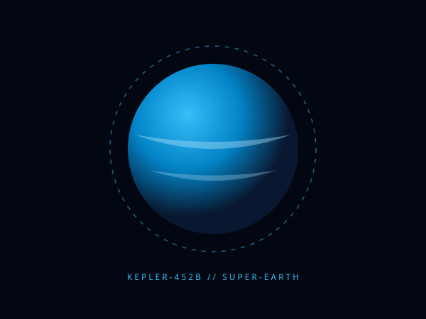
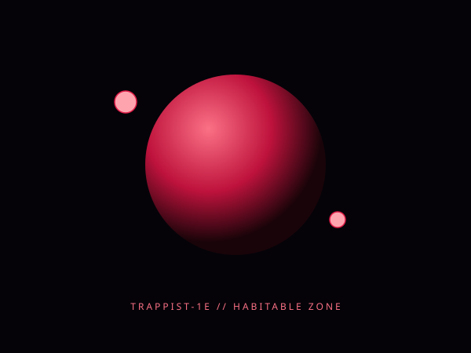
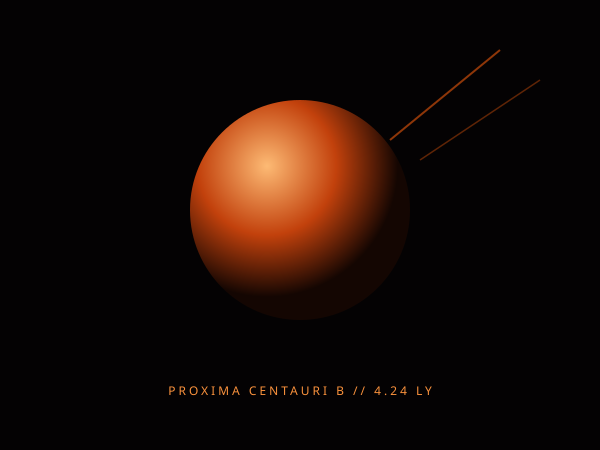

Картографирование землеподобных экзопланет, атмосферных биосигнатур и гравитационных эхо в рукаве Персея с помощью автономных спутников-интерферометров.
Управляйте гравитационными параметрами, скоростью орбит и исследуйте атмосферы планет в реальном времени.
Высокая вероятность жидких океанов. Атмосферный спектр показывает равновесие азота и углекислого газа с мощной защитной магнитосферой.
Снимки высокого разрешения, полученные нашей спутниковой интерферометрической группировкой.

Обращается вокруг звезды класса G2, идентичной нашему Солнцу. Радиус в 1.6 раз больше земного, геологическая активность и плотная облачность.

Ультракомпактная система красного карлика из 7 планет. Получает сопоставимый с Землей звездный поток с умеренным климатом.

Наш ближайший межзвездный сосед. Каменистый мир в приливном захвате, подверженный периодическим вспышкам родительской звезды.